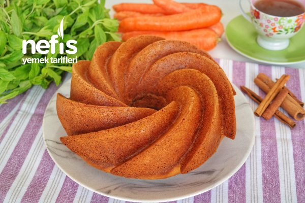

...Cevizli Havuçlu Kek...
Ilık kek, sıcak çay ile battaniye altında tv keyfi yapmak için
mükemmel bir gün...
Tarif:Yasemin & Elif Atalar

Kaç kişilik
:
6-8 kişilik
Hazırlama Süresi
:
20 dakika
Pişirme Süresi
:
40 dakika
Cevizli Havuçlu Kek Tarifi İçin Malzemeler
- 3 yumurta
- Yarım su bardağı sıvı yağ
- 1 su bardağı süt
- 2,5 su bardağı un
- 1 paket vanilya
- 1 paket kabartma tozu
- 3 adet havuç (küçük boyutta)
- 1 su bardağı çekilmiş ceviz
- 1 yemek kaşığı tarçın (silme)
Havuçlu Cevizli Tarçınlı Kek Tarifi Nasıl Yapılır?
- Havuçlu cevizli kek için öncelikle havuçlar yıkanıp soyularak rendelenir.
Suyunu sıkmayı unutmayın!
- Derin bir kapta yumurta ve şeker mikser ile köpük köpük olana kadar iyice
çırpılır.
- Süt ve sıvı yağ eklenerek karıştırılır.
- Un, kabartma tozu ve vanilya elenerek eklenir. Kıvamına göre un miktarını
ayarlayın.
- Malzemeler bir kez daha mikserle karıştırılıp içerisine havuç, ceviz ve
tarçın ilave edilir.
- Tahta bir kaşıkla son kez karıştırılır.
- Kullanılacak kek kabı yağlandıktan sonra karışım kaba alınır.
- 170 derecede önceden ısıtılmış fırında yaklaşık 40 dakika pişirilir. İlk
yarım saat fırının kapağını açmayınız ki
kekiniz daha güzel kabarsın. :)
- Fırından aldığımız keki kalıptan daha kolay çıkartmak için soğumaya
bırakalım. Yeterince soğumadan çıkartmaya
çalışırsanız kekiniz parçalanabilir. Soğuyan keki kalıptan rahatça çıkartalım.